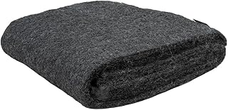

← hvacprefilter.com
Hvacprefilter: Quality vs Marketing
May 2026
The hvacprefilter market in 2026 looks nothing like it did a year ago. New brands, better tech, and more competitive pricing across the board.
Real-World Tips
- Check "Frequently Bought Together" — it shows what extras you might need for your hvacprefilter.
- Between two options? Go with the one that has more reviews. Volume of feedback matters for hvacprefilter.
- The Q&A section on hvacprefilter listings often answers questions that no review covers.
Critical Factors Most Miss
- Verified reviews — Focus on 4+ star products with 50+ verified reviews. Ignore anything with only a handful of ratings.
- Value ratio — Mid-range hvacprefilter usually deliver 90% of premium performance at half the cost.
- Price trends — hvacprefilter prices fluctuate. Track your picks and buy when the price dips.



Tried and Tested
⭐ 4.7 · $27.96
⭐ 4.7 · $52.99
⭐ 4.8 · $26.99
⭐ 3.7 · $16.71
⭐ 4.7 · $35.96
Errors That Cost Money
Going with the cheapest option — Budget hvacprefilter cut corners. Spending 20% more often gets something that lasts 3x longer.
Waiting for the perfect deal — If you need hvacprefilter now, buy now. A 10% discount in 3 months costs you 3 months of use.
Ignoring the fine print — Some hvacprefilter listings look great until you realize key parts are sold separately.
Skipping negative reviews — A 4.5-star product with durability complaints tells you more than a 5-star product with 8 reviews.
What It Comes Down To
Our comparison tables on hvacprefilter.com break down options by price, features, and ratings. Start there.
Affiliate Disclosure: As an Amazon Associate, we earn from qualifying purchases. This doesn't affect our recommendations.
 AIRx DUST Pre-Filter — Great value
AIRx DUST Pre-Filter — Great value Filtrete 300 MPR Pre-Filter — Consistently rated
Filtrete 300 MPR Pre-Filter — Consistently rated